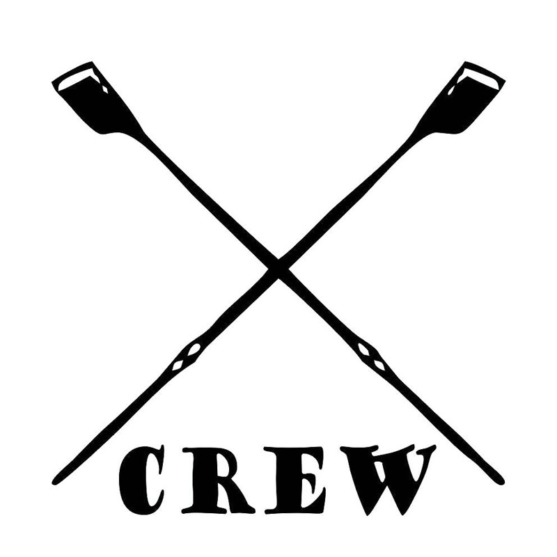
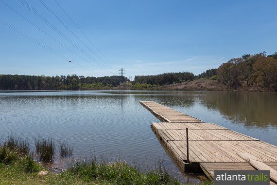

Rowing is the ONLY rowing club at the University of Georgia. As a club team, we hold open tryouts and do not require prior rowing experience. Our practices are held at Ft. Yargo State Park in Winder and at the UGA Ramsey Center. We compete in the fall and spring both regionally and nationally. In the fall, our Regattas are in Chattanooga, TN, Augusta, GA, and Atlanta, GA. If you would like to learn more, please review this website and leave your information in the space provided below.

What the Team Needs:
Rower
Cowswain
Tall
Short
Athletic
Average
Strong
Strategic
Where Do We Practice?
Fort Yargo State Park:
Yargo is a beautiful state park that the UGA Rowers call home. It includes miles of hiking trails, an enclosed beach and several grills and pinic tables for your enjoyment. It is a gated state park with many security features in tact. The team often holds events for parents and friends at this lo The University of Georgia Rowing Team currently has a boathouse located on the Yargo property. This is where all the water practices for the team take place.

The UGA Rowing Boathouse is Located at:
Fort Yargo State Park,South Broad Street, Winder,GA 30680
Fundraisers!
Parents Row!
Every year the UGA Rowing Team host Parent's Row event! This event cost $20 and allows your parents to learn the basics of rowing in a 45 minute session. This session is taught by current varsity rowers and is a great opportunity for parents to experience the water.